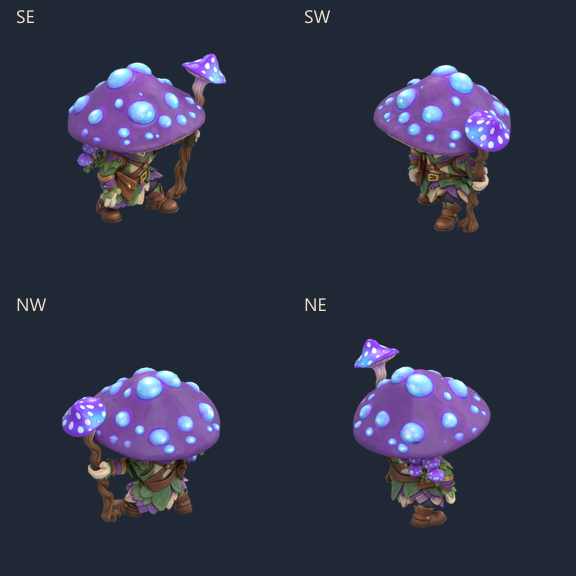
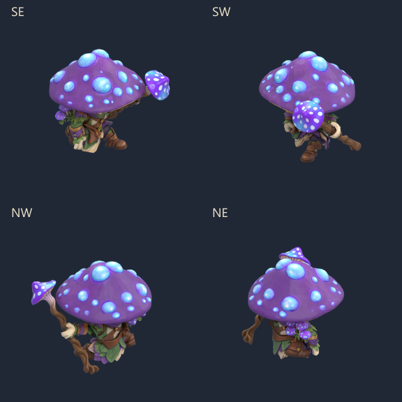
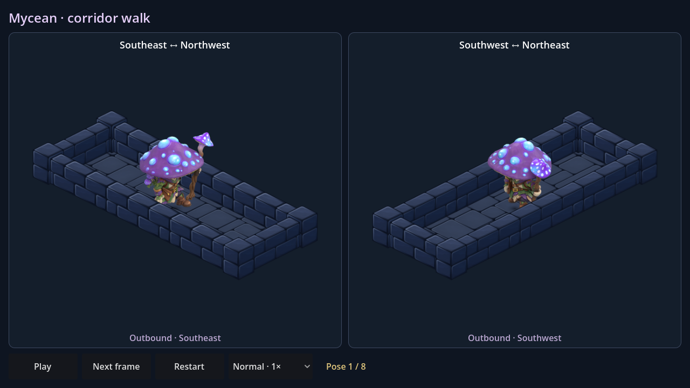
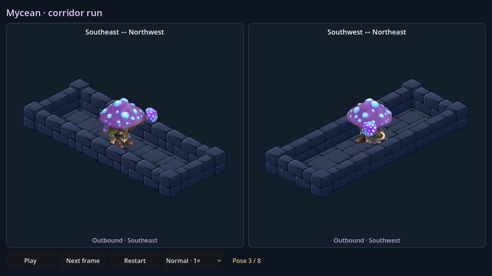
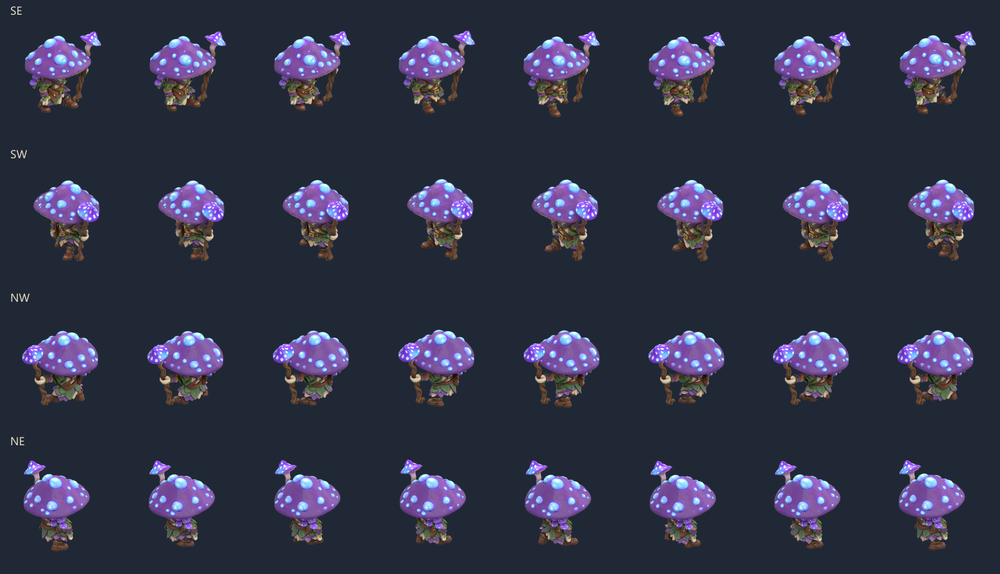
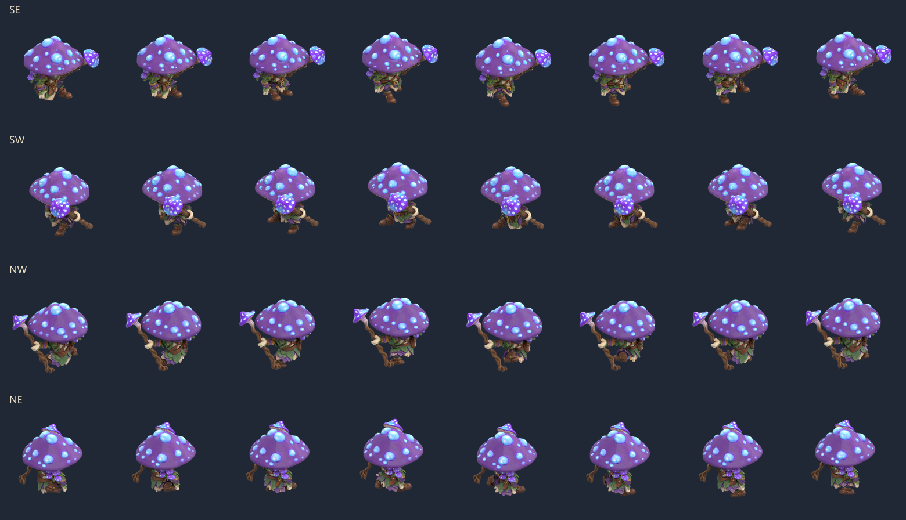

Deux cycles de huit poses, chacun rendu dans les quatre directions isométriques. Le personnage et son bâton sont rendus ensemble depuis le modèle complet, avec la prise corrigée.


Pour tester le déplacement : ouvrir MyceanWalk.tscn ou MyceanRun.tscn dans Godot puis F6. Les deux couloirs montrent les quatre directions en aller-retour. Pause, pas-à-pas et vitesses 0,5× à 2× sont disponibles.




Le grand chapeau conserve sa forme d’origine et masque une partie du visage sous la caméra isométrique. Ces scènes sont des aperçus isolés ; le Mycean n’est pas encore ajouté aux raids.
Reproduction et validation · Source Blender avec les poses · Contrôle des poses sauvegardées